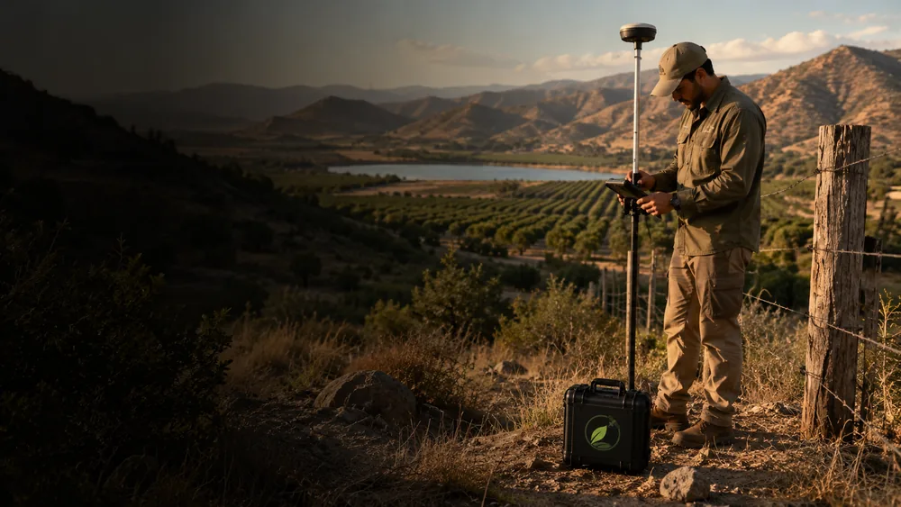

Diagnóstico ambiental y territorial
Caracterización integral de predios y su entorno: línea base ambiental, análisis del territorio y evaluación de condiciones físicas, bióticas y normativas.
Diagnóstico ambiental-territorial de predios
Caracterización de vegetación, suelos y relieve
Identificación de restricciones y oportunidades del sitio
